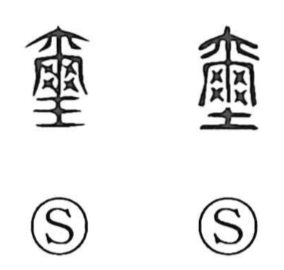

璽

Kun: shirushi | On: ji
imperial seal ・ jade seal ・ seal
Explanation
A phono-semantic character for the imperial seal: the element 爾 serves as the phonetic, giving the on reading ji, while the jade component marks the material of the sovereign’s seal. Early sources describe it as the royal seal by which the realm is governed. In practice, the characters were engraved into a block of jade, while ordinary seals in bronze were cast. The imperial seal had a knob through which a braided cord (綬) was passed so it could be carried; together, seal and cord were termed 璽綬, the emblem of the Son of Heaven’s authority.